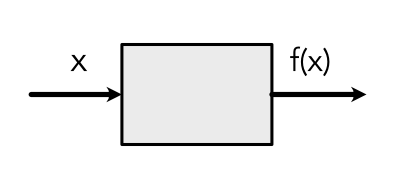
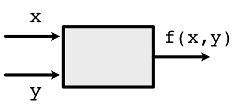
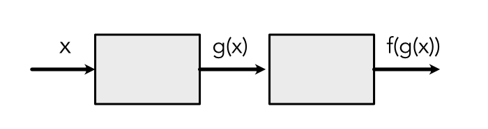

Tracking Variables¶
In Derivatives, we discussed two ways to compute derivatives. Symbolic derivatives require access to the full symbolic function, whereas numerical derivatives require only a black-box function. The first is precise but rigid, whereas the second is imprecise but more flexible. This module introduces a third approach known as autodifferentiation which is a tradeoff between symbolic and numerical methods.
We will see that autodifferentiation works by collecting information about the computation path used within the function, and then transforming this information into a procedure for computing derivatives. Unlike the black-box method, autodifferentiation will allow us to use this information to compute each step more precisely.
However, in order to collect the information about the computation path, we need to track the internal computation of the function. This can be hard to do since Python does not expose how its inputs are used in the function directly: all we get is the output only. This doc describes one method for tracking computation.
Variables and Functions¶
The main trick for tracking computation is surprisingly simple and straightforward:
replace all Python values with proxy classes, known as Variables.
replace all mathematical operators with proxy operators, known as Functions.
augment Variables to remember what Functions were applied to them in the past.
For notation, we captitalize our newly instroduced Functions and Variables to distinguish them from Python functions and variables.
Variables should behave exactly like Python numbers such that the user cannot tell the difference. It's a bit hacky, but pretty neat under the hood. We literally just create a generic Variable class:
-
class
minitorch.Variable(history, name=None)¶ -
history¶ the Function calls that created this variable or None if constant
- Type
History
-
derivative¶ the derivative with respect to this variable
- Type
variable type
-
grad¶ alias for derivative (PyTorch name)
- Type
variable type
-
name¶ an optional name for debugging
- Type
string
-
We as a user cannot ever change or manipulate values of Variables directly. We must create a Function class that acts on Variables:
-
class
minitorch.FunctionBase¶ A function that can act on
Variablearguments to produce aVariableoutput, while tracking the internal history.Call by
FunctionBase.apply().
It is useful to think of Functions as little boxes. For example, a one-argument Function \(f\) would look like this:
Internally, the box unwraps the content of the Variable \(x\), manipulates it, and returns a new wrapped Variable.
Similarly, a two-argument Function unwraps the content of both Variables \(x\) and \(y\), manipulates them, and returns a new wrapped Variable:
Scalar Functions¶
To make this whole Variable/Function idea more tangible, let's focus
on the Scalar class, a sub-class of minitorch.Variable. It wraps a
single scalar float (which is stored in the data attribute).
-
class
minitorch.Scalar(v, back=<minitorch.autodiff.History object>, name=None)¶ A reimplementation of scalar values for autodifferentiation tracking. Scalar Variables behave as close as possible to standard Python numbers while also tracking the operations that led to the number's creation. They can only be manipulated by
ScalarFunction.-
data¶ The wrapped scalar value.
- Type
float
-
This Variable minitorch.Variable has a corresponding Function
class minitorch.ScalarFunction which
is a subclass of minitorch.FunctionBase:
-
class
minitorch.ScalarFunction¶ A wrapper for a mathematical function that processes and produces Scalar variables.
This is a static class and is never instantiated. We use class here to group together the forward and backward code.
We can implement a simple function as a class with a static method:
ScalarFunction.forward()
class g(ScalarFunction):
@staticmethod
def forward(ctx, x):
# Compute g(x) (ignore ctx for now)
pass
For example, say our function is TimesFive, \(g(x) = x \times 5\)
class TimesFive(ScalarFunction):
@staticmethod
def forward(ctx, x):
return x * 5
Or, say the function is Mul, \(f(x, y) = x \times y\) that multiplies x by y
class Mul(ScalarFunction):
@staticmethod
def forward(ctx, x, y):
return x * y
Note
Within forward function, x and y are always numbers (not Variables). Forward function processes and returns unwrapped values.
If we have scalar Variables \(x, y\), we can apply the above Functions by
x = minitorch.Scalar(10., name="x")
y = minitorch.Scalar(5., name="y")
z = TimesFive.apply(x)
out = TimesFive.apply(z)
# or
out2 = Mul.apply(z, y)
Critically, we must not call forward directly but call apply instead. This is because 'apply' internally converts Variable inputs to floats to call forward, creats a trail of the history, and wraps the output into a Variable. Here z, out, and out2 are all Variables. This history is represented by a chain of previous Functions:
We additionally include a library to allow you to draw these box diagrams for functions.
out.name = "out"
SVG(make_graph(out))
out2.name = "out"
SVG(make_graph(out2))
Syntactic Sugar¶
There is still one minor issue with our Function. This is what our code looks like to use Mul
out2 = Mul.apply(x, y)
It is annoying and bug-prone to write code this way. Also, we promised that we would have Functions that look just like the Python functions we are used to write.
To get around this issue, we need to augment the minitorch.Scalar
class
so that it can behave normally under standard mathematical operations.
Instead of
calling regular +, Python will call our +. Once this is achieved, we will
have the ability
to record and track how \(x\) is used in the
Function, while still being able to write
out2 = x * y
To achieve this, the minitorch.Scalar class needs to provide syntax
that makes it appear like
a number when in use. You can read emulating numeric types
to learn how this could be done.